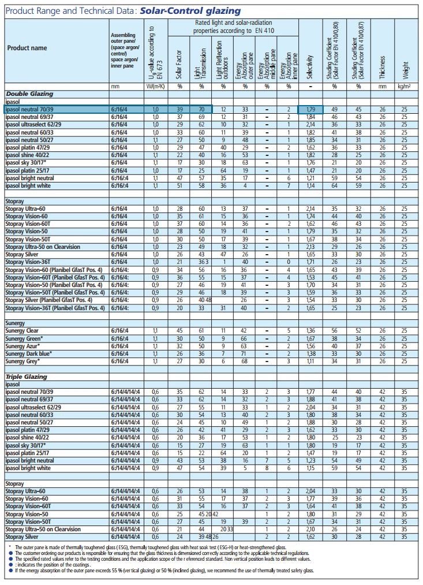
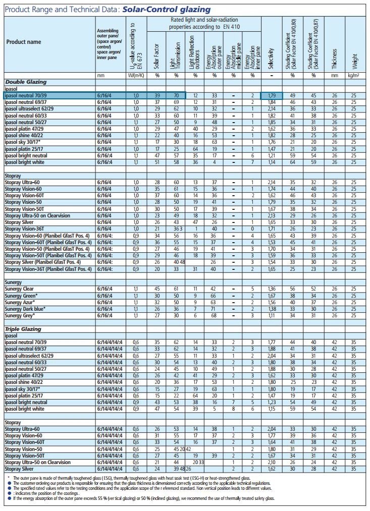

Glass Selector
Some information has been omitted from this case study due to confidentiality. The views and information shown are based of my own opinions and findings, which are not necessarily representative of Foster+Partners
Summary
A quick overview of the project
Goal
The goal of this project was to make a tool that could take data from various sources, and present it in an interactive and intuitive way in order to
simplify the glass selecting process for architects of various skill levels as well as some of the other disciplines.
My Role
In my role at Foster+Partners, I was well versed in the various glass products and the technical information behind them. I was also fortunate to be in regular contact with the biggest glass producers in the industry,
as well as working with the various disciplines within the company. This put me in a prime position to be able to carry out the research from the various stakeholders.
I carried out the testing of prototypes, the design of the final tool as well as putting together the code for the launched version.
Process
Research was carried out initially to establish where the issues were with evaluating glass options. Some basic insights were used to create the first prototype of the tool to check the viability, using Excel with VBA.
From that point onwards, all prototyping was done with coded versions using HTML/SASS/JS, with design being carried out in Sketch. These iterative prototypes were regularly exposed to users, in both user sessions and presentations.
This lead to a fast development process, with new features and changes being implemented on a weekly basis for testing.

Outcome
A 1.0 version was launched onto the F+P intranet for everyone within the practice to use. Feedback post launch was positive, no tool tackling this issue existed at the time, and it had made navigating the glass
market easier. However there was room from improvement: From tracking the users, the primary demographic wasn't the architect, but instead the multi-disciplinary support teams. They were using the tool to support
their discussions with the architect, but ultimately became the primary user interacting with the tool.
As future versions are now in development, they offer the opportunity to instead cater to these more specialised requirements.

Full Overview
An in-depth look into the research, reasoning and creation of the tool
The Problem
My desk at Foster+Partners (F+P) was located in a room filled with over 20,000
materials. One section of this room was devoted to double glazing
samples, with metal coatings applied to them in order to repel heat (Infra-red parts of the spectrum)
but allow light in.
These kind of coatings were of huge importance in the overall design of a building, not
only did they dramatically affect the visual aesthetic of the building,
but they also needed to conform to performance requirements in
order to meet regulations, and create a sustainable design.
Each company has their own format for presenting this information, there are multiple
products that achieve the same performance, there are different glass substrates, build-ups
and there is not a single centralised resource which allows for comparison between them.
The Starting Point
Specifying glass into a building is a long and complicated process, and more often than not, non-linear. Although the architect would have been thought to be the driving force, they are often referred to as the conductor of an orchestra of specialties. In a practice with so many disciplines inegrated into, this is more true than ever:
The Architects
They have the vision for the building and need the glass to fit in with the bigger picture, relying on renders and mockups to make their selection
Environmental Engineering (EE)
EE needs the building to perform in the required ways, particularly to meet relevant codes and standards. Their laid out requirements must be me
Specialist Modelling Group (SMG)
In complex projects, they work on parametrically modelling geometry, and other aspects of design such as lighting or acoustics
Structural Engineering
Models the architects designs, adding structure and analysing to ensure suitability
Construction Review Group (CRG)
Reviews the final concept ensuring the specified design is suitable for construction
Sustainability Group
Evaluates the performance of the project in relation to any standards or qualifications that it is aiming for
Material Research Centre (MRC)
Supports the teams in choosing the correct materials, usually with the physical samples to evaluate
Visualisation
Creates all the visuals for the project, which are presented both internally and to clients
Narrowing it Down
Whilst this is a big list of stakeholders, ultimately the architects and environmental engineers have the biggest influence on the decision making:
The architects would relay the feedback from the client, and concentrate feedback from the various other support teams on the project.
EE had "make or break" requirements, every building would have to comply with their laid out requirements, with no other acceptable outcome.
User Journeys
With the two primary users identified, I began to create user journeys for them. Unfortunately, as expected these aren't always straight forward. Not only do some projects take up to 7 years to complete, there are numerous interactions, with different elements put on hold and restarted. Speaking to the more experienced users who had worked on a few projects helped to piece together idealised journeys:
The Architect:

The Environmental Engineer:

In both of these situations, there's a lot of doubled work as well as stages that are repeated. Furthermore,
the projects can go on for some time, so meetings that take place, and the knowledge gained from discussions
with specialists tend to get lost.
Importantly, the key information from the suppliers isn't held anywhere formally beyond emails and individual data sheets.
This results in multiple consultations with company representatives in order to gain the information they require whenever
the there's a change of requirements, but a lot of this information is static, and there's potential to access it much quicker.
Going to the Source
The next step was to understand the information that architects actually needed, as at different stages there are varying characteristics
that are considered for the glass product.
Towards the end of the specification process, it is inevitable that a company will be contacted
for information specific to that project. However in the first stages where vast ranges of glass are being selected from, there is a reliance purely
on the performance of the products.
In these cases, the datasheets produced by companies are the initial source of the decision making.
I began to look at the datasheets, below are examples of the format from two different companies with two comparable products highlighted:
 

Some of the differences between these two include:
●An individual datasheet compared to a datasheet for all products available
●There's overall differing format/layouts
●Different levels of detail for each product on characteristics
●Different naming conventions and terms for similar performing products
However there are multiple companies that offer products in this market, all suffering the same disparities as the above.
In my role at the time, I was fortunate to be in touch with these companies on a regular basis,
and so used my contacts to start to get the companies on board. This group included:

From discussions with them, I put together a database of all the datasheets from all the products of these companies.
One of the early issues was inconsistencies in data between the products, but also not all the information included was relevant.
Using some basic VBA, I turned this into a prototype tool that allowed the entire dataset to be searched. Although "Quick and Dirty",
it proved useful in establishing what would be useful for the users.

{kind=link}
Feedback
Interactivity
Dynamically selection was really well received, particularly being able to adjust the parameters to open up new results
Samples

Keeping track of what samples were in the library was implemented afterwards, as it was a question brought up frequently when the tool was being used
Information

The available search parameters were reduced over time to only the properties that were needed without impeding the usability of selecting a product
Prototyping
Moving forward with some of the outcomes from discussions, I began prototyping a web-based solution which could handle the streamlined data and present this information in an easy to use way.
Whilst this was mostly fueled from the insights gained from the use of the prototype tool, no tool like this existed, and so the users had plenty of ideas and suggestions of what could improve
their workflow.

These went through an evaluation process to judge feasibility and how beneficial they could be based on the research vs my limitation of time that I could spend working on implementing the features
Contrary to what was expected from a selection process that relied on prescriptive input, the engineers in particular sought the ability to "explore" the options. From
their calculations, they would always give a soft and hard limit for the environmental performance of the structure, and so they used their results as a conversation starter
for discussions, with leeway in their parameters.
The tool was therefore divided into 3 sections:
Dynamic Inputs and Results
Here the user could "play" around with their performance requirements and filter down to the products that meet their requirements on the fly
Detailed Information
When a particular product was selected, it would bring up further detailed information regarding other aspects of the glass that were usually asked such as:
●Maximum size available
●Contact information for company representative
●Glass build up the data is based on
●Other technical data
Selected Products
With a number of products that can meet the same requirements, users could build up a list of products for exporting out into their own tables, with all the data shown
One of the advantages of undertaking this project single handedly meant that feedback picked up could be almost immediately looped back into the tool as I would be able to
design and write it in myself. I went through a quick iteration process, implementing suggestions and feedback, and republishing for a select group to trial.
Launching
Following an initial approval process, the tool was launched onto the Foster+Partners intranet, a long with a logger to be able to track who was using it.
Overall it was received quite well, with a high number of users from various teams.
Following this initial launch, the logger was analysed to reveal that the primary users of the tool were actually members from support teams, including EE, SMG, Sustainability and CRG.
I had spoke with some of them, and found that they had been using it both as a supporting tool when discussing with architects, but also for their own work which involves modelling or suggestions that
require a range of products.
Moving Forward
From the post-launch discussions, I had learnt a bit more about the culture that was unique to F+P. As mentioned at the start,
it's a big practice, which allows for multiple teams to be able to support architects with their work. This means that although
the architect in theory has the biggest decisions when it comes to glass, they have the luxury of ensuring that there is someone
from a support team there to be able to help with the technical aspects of it
There were also a number of suggestions from the situations where the technical experts were using the tool independently:
●F+P Specific building data including past projects
●Further technical information such as spectral transmission data
●And others...
Some of these features are currently being evaluated for feasibility, and a design criteria will be drawn up for version 2.0